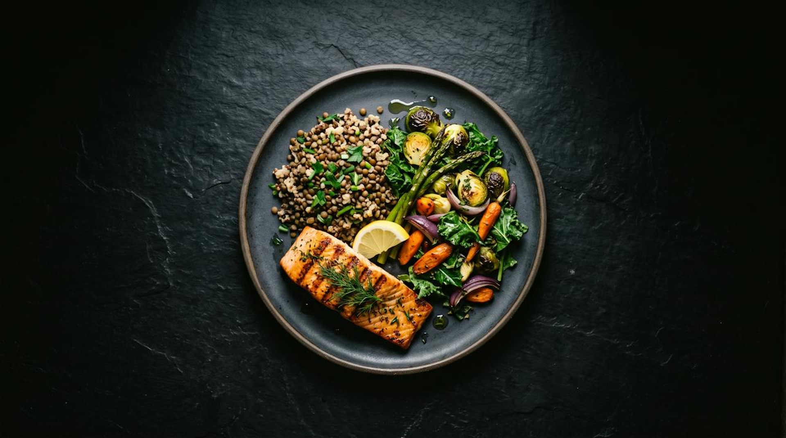
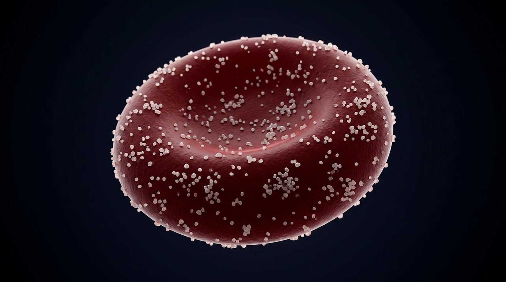
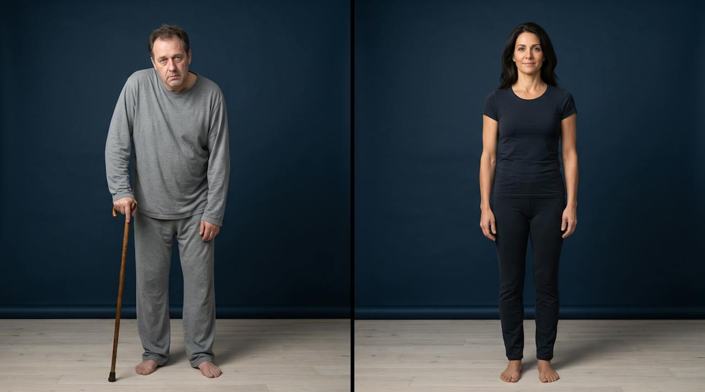

Her Version C, slide by slide, with her builds shown as frames. Seventeen slides, every headline hers.
SLIDE 1The site's own motion behind the title. She talks on camera; this is the card the room sees while she does.
LONGEVITY LIFE ACADEMY PRESENTS
The Longevity Masterclass
Julie Gibson Clark. Live.
01 / 17
SLIDE 1, build 2Her first headline, word for word.
Welcome. I am very normal.
01 / 17
SLIDE 1, build 3The whole hour lives between these two numbers.
Second in the world, 2023.
About twelve dollars a day.
01 / 17
SLIDE 2Her photograph goes here, full bleed, graded into the navy, when she sends it. Until then the two ages carry the why.
MY WHY
Why I went down this path.
70
still carrying the groceries
90
still holding a conversation
02 / 17
SLIDE 3, build 1Nothing else on screen, so the room gets the point before any science.
Ten years pass. By this test, I age about six.
03 / 17
SLIDE 3, build 2Every number engraved in the instrument: 1.0 at the top for most people, the needle on 0.665, the 0.76 tick, the red side running faster than the calendar.
DUNEDINPACE, MY PACE OF AGING
Ten years pass. By this test, I age about six.
The speed towards death.
DunedinPACE: Belsky et al., eLife 2022. Faster pace, shorter life: Balachandran et al., Nature Aging 2024.
03 / 17
SLIDE 4, build 1Aging at the root; the four things everyone fears on the branches.
WHY ANYONE BOTHERS
Longevity is like a cake.
Slow aging itself and heart disease, cancer, dementia and type 2 diabetes move back together. Buck Institute; López-Otín et al., Cell 2023.
04 / 17
SLIDE 4, build 2Whole, baked, iced, named exactly as she drew it. It returns at the start of each layer, lit.
HOW I ORGANIZE THE SCIENCE
Longevity is like a cake.
Icing
Therapies
Stress Management
Movement
Food
Sleep
The thin layer
Menopause
04 / 17
SLIDE 5A map, not a list: cost left to right, human evidence bottom to top. Sauna cheap and high; drips, peptides and stem cells expensive and low; the two-million program off the edge; her coin at the origin.
THE ICING, FROM SAUNA TO RAPAMYCIN
Not wrong. Not first.
In amber: leave these until the cake is baked.
Sauna: Kunutsor et al., Scand. Cardiovasc. J. 2024, 2,575 men, 28 years; Laukkanen et al., BMC Medicine 2018.
05 / 17
SLIDE 6, build 1Everything dark except the layer she means.
THE THIN LAYER
Menopause therapy is a layer, not icing.
Find a certified practitioner through The Menopause Society.
The Menopause Society, 2022 Position Statement. FDA, November 2025: boxed warnings removed from menopausal hormone therapy.
06 / 17
SLIDE 6, build 2Menopause to ten years after, drawn as a window, because the science she quotes is a window.
THE THIN LAYER
Menopause therapy is a layer, not icing.
Under sixty, or within ten years of menopause: the benefits generally outweigh the risks.
The Menopause Society, 2022 Position Statement. FDA, November 2025: boxed warnings removed from menopausal hormone therapy.
06 / 17
SLIDE 6, build 3The four layers light bottom to top, the icing dims, the headline changes to the sentence that starts the next forty-five minutes.
THE BRIDGE
Four layers hold up the cake.
Sleep. Food. Movement. Stress management.
06 / 17
SLIDE 7Sleep itself on screen: the brain's drainage system, the 2024 imaging that made the repair shift literal. Her five numbers beside it, nothing else.
LAYER ONE
Sleep is the repair shift.
The brain's drainage channels, imaged in living people for the first time. Most of the flushing happens while you sleep.
9:00 PM
lights out
5:00 AM
up
6:00 PM
last meal, three hours before bed
8:00 PM
screens off, the wind-down
8 hours
of opportunity, cool and dark
Piantino et al., PNAS 2024. Regularity beat duration: Windred et al., Sleep 2023, 60,977 adults, up to 48% lower mortality for the most regular sleepers.
07 / 17
SLIDE 8Nothing but the line. A beat of silence before she speaks.
“I’ll sleep when I die,” said the person aging at twice the normal speed.
08 / 17
SLIDE 9One real plate, three parts named beside it, and her five numbers down the left. No diet named anywhere.
LAYER TWO
Take the religion out of your diet.

Whole food
the default
Fiber
the lever
Protein
the floor
1 lb
of vegetables a day
1 g
of protein per pound of goal weight
8 to 6
the eating window
10 AM
coffee cutoff
Zero
alcohol on training days
Fiber: 25 to 38 g a day. Over 90% of women and 97% of men miss it.
Dietary Guidelines for Americans, 2020 to 2025. Her numbers are hers, not a prescription.
09 / 17
SLIDE 10As agreed: one object, three panels. Spike, the monitor's trace. Signal, insulin docking on the cell, the hallmark of aging she names. Scar, glucose bonded to the red blood cell, which is what HbA1c measures.
SUGAR AND AGING
The one thing every diet agrees on.
Spike
What the monitor shows after a sugary meal.
Signal
Insulin and the nutrient-sensing pathways switch on. On all day, that is one of the twelve hallmarks of aging.

Scar
Sugar bonds to proteins: glycation. HbA1c is sugar stuck to your red blood cells.
Chiu, Epel and Laraia, UCSF, JAMA Network Open 2024: each gram of added sugar, an older biological age. Huang et al., BMJ 2023: under 25 g a day. López-Otín et al., Cell 2023.
10 / 17
SLIDE 10, build 2The object dims and the sleep-and-food half of the hour ends on two checkboxes.
YOUR TWO MONDAY CHANGES
Move dinner earlier. Rebuild one plate.
It doesn’t need to be six. Just earlier than it is now.
Protein as the floor, a pile of vegetables, whole food where you can.
10 / 17
SLIDE 11, build 1Half and half, as asked: a man on a cane, a woman standing tall, the same age, same light, same floor, both looking at you, filling the frame. Two words, cream, centered low. Beside them the number behind the picture.
LAYER THREE

Same age.
12.4 years
The gap between years lived and years lived well, in the United States. The widest of 183 countries.
years lived
years lived well
Garmany and Terzic, Mayo Clinic, JAMA Network Open, December 2024.
11 / 17
SLIDE 11, build 2Same picture. He dims; the callouts land on her body, each leaving at the height of the part it serves, brain, heart, heart, bones and muscle, so nothing crosses. Each carries the number researchers use to predict how long you live. Your pillars of movement, on one slide.
Four types of movement, four parts of you.
Mobility and balance
for the brain, and your feet
predicts how long you live: the one-leg stand
VO2 max
for the heart
predicts how long you live: fitness
Zone 2
for the heart
predicts how long you live: 7,000 steps a day
Weights
for bones and muscle
predicts how long you live: grip strength
López-Bueno et al., 2022. Lang et al., BJSM 2024. Ding et al., Lancet Public Health 2025. Mayo Clinic, PLOS One 2024; Araujo et al., BJSM 2022.
11 / 17
SLIDE 12Her week on seven blocks in the same four colours as the callouts, the step floor under all seven.
THE DRILL-DOWN
My weekly longevity protocol.
Mon
Strength
Tue
Zone 2
Wed
Strength
Thu
Sprints
Fri
Strength
Sat
Zone 2
Sun
Mobility
8,000 steps a day, every day, under all seven
More than you need on day one. A walk is a perfectly respectable place to begin.
12 / 17
SLIDE 13, build 1The cake with stress lit, held through her story. No graph, no numbers.
LAYER FOUR
The layer people skip.
A divorce. A test. Cortisol high. Six months of practice and it was back to normal.
13 / 17
SLIDE 13, build 2The instruction in type, at the size she says it, three lines she can lead the room through. No drawing.
THIRTY SECONDS, TOGETHER
Two in. One long out.
Inhale.
through the nose
Inhale again.
a second sip, through the nose
One long exhale.
slowly, through the mouth
The physiological sigh: Balban, Spiegel and Huberman, Stanford, Cell Reports Medicine 2023. 111 people, five minutes a day for a month: mood improved more than with meditation.
13 / 17
SLIDE 14Her whole day as one clock, 9 PM at the top so the eye starts at bedtime, every hour coloured by its layer, the eating window as one band. One object, built to be screenshotted.
THE DAY IS BUILT BACKWARD FROM BEDTIME
Julie Gibson Clark’s Longevity Protocol
Manoogian et al., Annals of Internal Medicine 2024: the TIMET trial, 108 adults, three months.
14 / 17
SLIDE 15, build 1The open notebook, the cake small beside it, her line.
BEFORE ANY SUPPLEMENT
You don’t need a lab. You need a notebook.
Every layer shows up in a number you can get without a lab.
15 / 17
SLIDE 15, build 2Three tests, one line.
BEFORE ANY SUPPLEMENT
Test. Then buy.
Vitamin D
Homocysteine
Red blood cell nutrient levels
Ask your doctor which of these makes sense for you.
15 / 17
SLIDE 15, build 3Her list stands on its own, each item with its monthly cost and one total, the NOVOS disclosure in small type.
WHAT ONE PERSON CHOSE
My list, after my tests.
Each item with its monthly cost, one total, from her website. NOVOS, with the affiliation stated. Not a shopping list.
15 / 17
SLIDE 16The white cake she would actually bake, cut once, every layer visible one last time.
THE WHOLE CAKE
That’s the cake.
Numbers aren’t what kept her doing this for ten years. Three questions did.
16 / 17
SLIDE 17, build 1Why, Intention, Resources on a lit ring; the centre lights only when all three are on.
THREE QUESTIONS, ONE CIRCLE
Why. Intention. Resources.
Take any one away and the other two fall over.
17 / 17
SLIDE 17, build 2The Academy mark, the two lines, and the ask that ends the hour.
The same cake, built week by week, with a teacher.
Eighteen weeks. Eighteen live sessions. A class of eight to fifteen.
Your why. Your intention. Your resources. One thing, forty-eight hours.